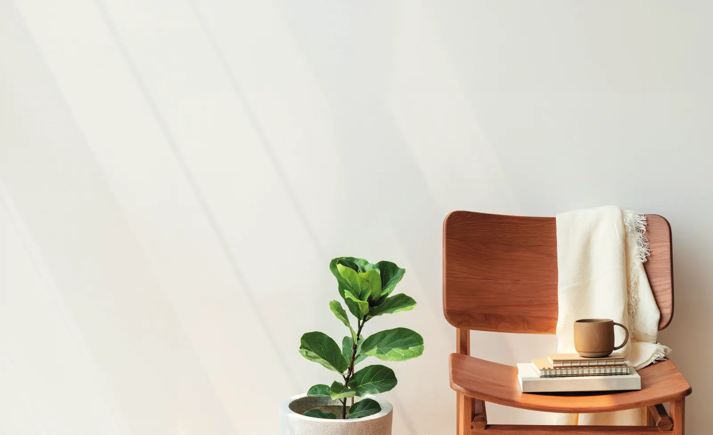

Studio Saphy
Arquitectura sostenible en el Valle de Cusco.

Estudio
Studio Saphy nace como un espacio de creación arquitectónico basado en el respeto a la tierra que habitamos, dedicado a construir de manera sostenible y a rescatar los sistemas tradicionales de la región. Como cusqueñas, nuestro objetivo es una construcción consciente, respetando el entorno y la comunidad.
Buscamos la integración de materiales naturales y de bajo impacto ambiental en cada propuesta, exponiendo la belleza y tradición de estos. El diseño es nuestra herramienta para conectar con la tierra y la cultura, y expresarla a través de la arquitectura.